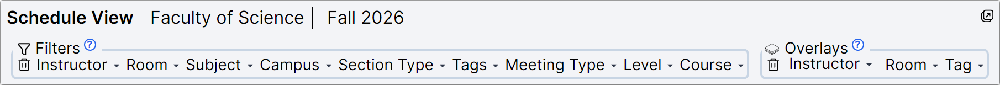
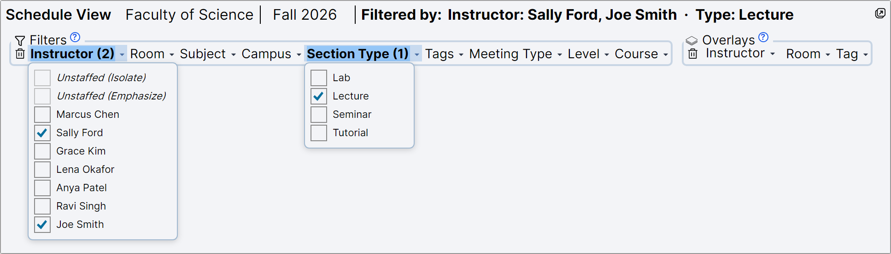
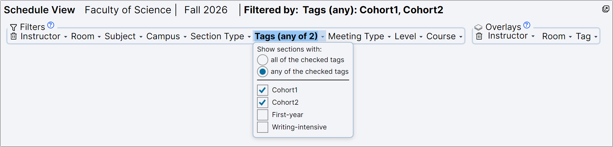
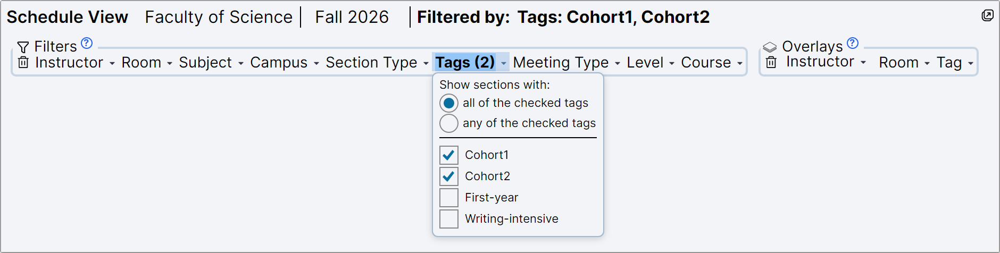
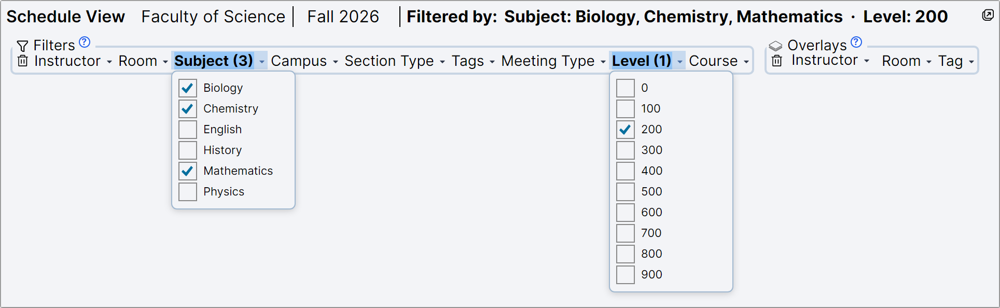
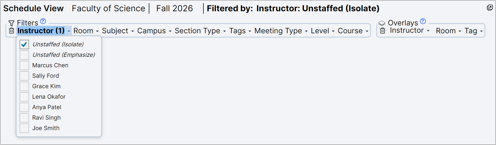
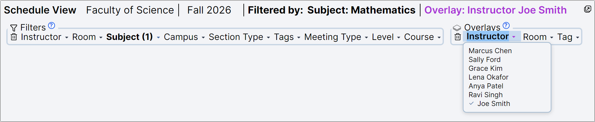

On this page: The one rule · Examples · Rooms and meeting types · Overlays · Good to know · At a glance
The Filters bar above the Schedule Grid lets you narrow the grid down to the sections you care about: one instructor's teaching, all the labs, everything second-year, and so on. Next to it, the Overlays bar does the opposite job: it adds one person's, room's or tag's sections to whatever you are looking at, marked in red.

Click any word in the Filters bar (Instructor, Room, Subject…) to open its list, and tick what you want. The bin at the start of the bar clears every filter at once.
To see what you are filtering by, look at the title bar. As soon as anything is ticked, the Schedule View's title bar spells it out in words, for example Filtered by: Instructor: Sally Ford, Joe Smith · Type: Lecture. Each part between the dots is one list you are using, followed by what you ticked in it. An overlay gets its own note there too, in colour. It's the quickest way to answer "why am I seeing only these?"
Think of each list in the bar as a question about a section: Who teaches it? What subject is it?
So a section stays on the grid only if it fits every list you have used, and for each list it only has to fit one of the things you ticked. Lists you have not touched don't matter at all.
Tags are the one exception. Ticking two tags normally means "sections that have both tags". You can switch it to "either tag" at the top of the Tags list. See Example 2.

Two people in one list means either of them; the Section Type list adds "and it must be a lecture":
| Section | Taught by | Type | On the grid? |
|---|---|---|---|
| BIOL101 A | Joe Smith | Lecture | ✔ shown |
| MATH225 B | Sally Ford | Lecture | ✔ shown |
| MATH101 A | Joe Smith and Grace Kim | Lecture | ✔ shown (one of them is enough) |
| CHEM110 L01 | Sally Ford | Lab | ✘ hidden: not a lecture |
| BIOL210 A | Marcus Chen | Lecture | ✘ hidden: neither Joe nor Sally |
Section Type or Meeting Type? Section Type is what kind of section it is as a whole (a lecture section, a lab section). Meeting Type describes each of its weekly meetings separately. To find "the lectures", Section Type is usually the one you want.

Out of the box, the Tags list is set to all of the checked tags instead. That suits tags that describe a combination, such as First-year and Writing-intensive together:

| Section's tags | "all of the checked tags" | "any of the checked tags" |
|---|---|---|
| Cohort1 | ✘ hidden | ✔ shown |
| Cohort2 | ✘ hidden | ✔ shown |
| Cohort1 and Cohort2 | ✔ shown | ✔ shown |
| First-year only | ✘ hidden | ✘ hidden |
The Tags list goes back to "all" whenever you clear the filters with the bin, and each time TermPoint starts.

| Section | On the grid? |
|---|---|
| BIOL210 A | ✔ shown |
| CHEM201 A | ✔ shown |
| MATH225 B | ✔ shown |
| MATH101 A | ✘ hidden: first-year |
| PHYS120 A | ✘ hidden: Physics wasn't ticked |
Want second- and third-year? Tick 200 and 300 in the same Level list: more ticks in one list let more in.
Why is my grid empty? Usually because two lists ask for things no section can be at once. Ticking Mathematics under Subject and BIOL210 under Course asks for "a Mathematics section that is also BIOL210", and there is none. Read the Filtered by: line in the title bar to see what you have asked for, or click the bin to start again.
The first two items in the Instructor list are special:

The Room list has a similar item, Unroomed, for meetings that don't have a room yet.
Most lists decide about a whole section. Room and Meeting Type decide about each weekly meeting on its own. Say BIOL210 A has its lectures on Monday and Wednesday in SCI 101 and its lab on Thursday in SCI 204. Tick SCI 101 under Room, and the grid shows the Monday and Wednesday meetings, but not the Thursday lab, because that meeting is somewhere else.
A filter hides what doesn't fit. An overlay adds: pick one instructor, room or tag under Overlays, and their sections are drawn on the grid in red, on top of whatever your filters show, even the sections your filters are hiding.
Example 5: all of Mathematics, plus everything Joe Smith teaches.

Filter or overlay? Use a filter to focus on a group and hide the rest. Use an overlay to see where one person or room is busy against the background of everything else, for instance to spot a clash before you assign someone.
| You tick… | The grid shows… |
|---|---|
| two things in one list | sections that fit either |
| one thing in each of two lists | sections that fit both |
| two tags, "all of the checked tags" | sections with both tags |
| two tags, "any of the checked tags" | sections with either tag |
| an overlay | your filtered sections, plus the overlay's in red |